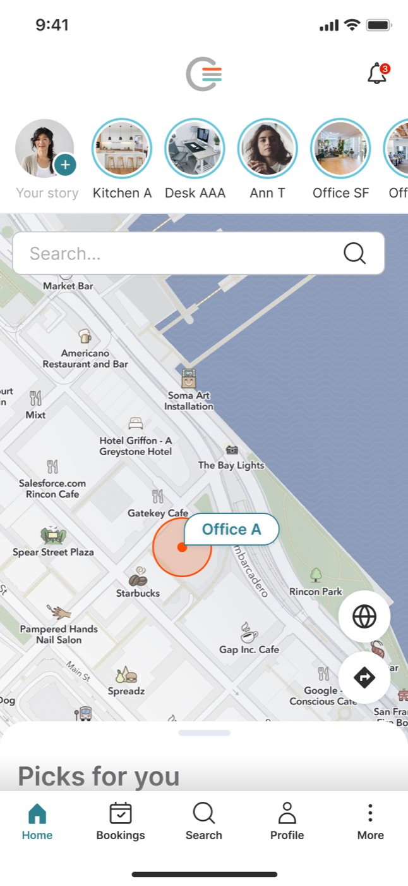
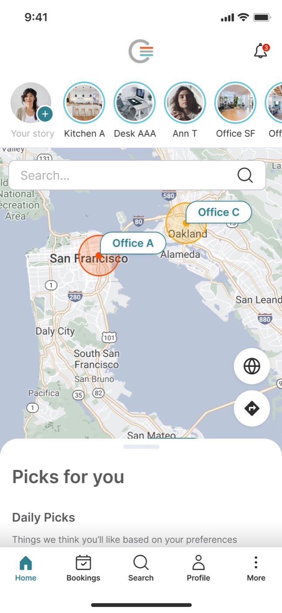

Scott Dickie
Scott Dickie
0-1 B2C product launch post COVID
Comfy was a B2B IoT company that was acquired by Siemens and merged with Enlighted. During my tenure, I led design, research, and product strategy for its workplace experience platform. I helped take the product from 0 to 1, shaping the vision that secured a $10M investment from Siemens. I built the design system, scaled a cross-functional org, and launched mobile and enterprise tools that gave employees control of their environment while transforming how facilities were managed.



What I Did:
Product Strategy
Led strategic product research, strategy and funding proposals for securing $10M from Siemens to build a B2C product.
B2C Pivot
Conducted market research, created beta product and validated product market fit.
Integrated Teams & Freelancers
Inherited an existing team and augmented with freelancers and integrated the Enlighted team.
Challenges
In 2020, Comfy’s business was severely impacted by the pandemic. The corporate real estate industry was being disrupted and office culture was changed forever. Large enterprises were rethinking their workplace strategies and trying to define hybrid workplace solutions that aligned with their culture, employee needs and requirements from executives.
Solution
During the research and design iterations, we faced several challenges with industry and customer news about their shifting workplace strategies. This caused friction between some of our customers and our new strategy that was more aligned with employee expectations. While our vision didn’t align to all customers, it won with several large customers that turned into huge champions for our product and company.
Solution
- Employee - first product experience that focuses on casual collisions between coworkers
- Reduce energy footprint of offices with industry leading sensors and energy solutions
- Partner with our advisory board customers through beta product launches to iterate and launch globally
Results
- Increased sales wins based on product vision and demo alone
- Secured additional $MM funding to hire additional product development teams to execute vision
- Still awaiting marketing launch (post my departure)